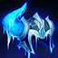
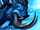
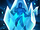

Habilidades
Passiva: Fúria do Norte
Após ficar fora de combate, Sejuani recebe Armadura Congelada, que concede Armadura, Resistência Mágica e imunidade a reduções de velocidade. Armadura Congelada persiste por um curto período após Sejuani sofrer dano e Sejuani pode causar dano a um inimigo atordoado para estilhaçá-la, causando muito Dano Mágico.
Q: Ataque do Ártico
Sejuani avança em investida, lançando os inimigos pelos ares. A investida cessa após acertar um Campeão inimigo.
W: Ira do inverno
Sejuani usa a maça duas vezes, causando dano e aplicando acúmulos de Congelar.
E: Congelamento Permanente
Sejuani congela e atordoa um Campeão inimigo que tiver o máximo de acúmulos de Congelar.
R: Prisão Glacial
Sejuani arremessa sua boleadeira, congelando e atordoando o primeiro Campeão que acertar, criando uma tempestade de gelo que causa lentidão aos demais inimigos.